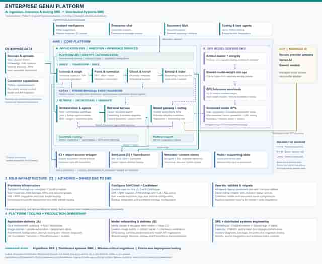

THE PROBLEM
Enterprise GenAI platform
Enterprise teams needed a shared platform for document Q&A, enterprise chat, incident intelligence and coding-agent workflows. These experiences depended on more than a model endpoint: documents had to be ingested, transformed and indexed; retrieval had to remain responsive; and model deployments needed repeatable artifact and runtime configuration. Different workloads also placed different demands on CPU, storage and GPU capacity.
What I owned
I co-owned platform engineering, GPU/Kubernetes infrastructure, ingestion and inference GitOps onboarding, and observability for an internal enterprise e2e private AI serving platform. I owned model-weight serving and onboarding tooling, Solr infrastructure and performance engineering, and Mac document-conversion infrastructure. Elasticsearch and Milvus were shared ownership.
- Owned model-weight serving and onboarding tooling, rapid prototyping and decommissioning: Helm/Argo CD, vLLM, S3-to-FSx weight staging, checksum validation, read-only mounts, up to eight-way tensor parallelism, memory sizing, context limits and LoRA configuration.
- Owned Solr 9.9 infrastructure, performance engineering, IaC and lifecycle tooling at approximately 200-node, multi-region scale. Supported 15,000+ project-embedding collections across five clusters in one region, with at least 90% active. Co-owned Elasticsearch and Milvus.
- Co-owned ingestion/inference Kubernetes platform engineering and operations; partnered with developers on GitOps onboarding across Dev/UAT/Prod. Co-owned GPU cluster setup, upgrades, patching and operations on AWS EC2 with NVIDIA V100, A10G, L40S and A100 GPUs.
- Developed Go tools for model-weight checksums and Kubernetes Kafka topic/user resource generation; built infrastructure and lifecycle automation using Python, Terraform, CloudFormation and Ansible.
- Co-owned logging, dashboards, alerting and incident response. Investigated production failures using network PCAP, application p95/p99 latency, request and ingestion queue backlogs, and Kubernetes PVC diagnostics.
- Owned Mac conversion infrastructure, IaC and tooling for Keynote, Numbers and Pages conversion to Office/PDF; productionized EC2 Mac conversion with application developers.
MODEL-WEIGHT TOOLING
Owned serving, onboarding, rapid prototyping and decommissioning tooling.
SEARCH & VECTOR INFRASTRUCTURE
Owned Solr; co-owned Elasticsearch and Milvus: provisioning, tuning, tooling and IaC.
KUBERNETES PLATFORM OPERATIONS
Co-owned ingestion/inference and GPU Kubernetes lifecycle, GitOps and operations.
PRODUCTION RELIABILITY
Co-owned observability and incident response across network, application, queues and storage.
MODEL SERVING / PLATFORM SCOPE
Models behind the serving platform.
Apple foundation models; Qwen3.5-397B-A17B-FP8; Qwen3-32B; Mixtral-8x22B-Instruct-v0.1; gpt-oss-120b; Pixtral-12B-2409.
AWS infrastructure and GCP Vertex AI platform engineering; production PostgreSQL experience across Apple, Freddie Mac and Cloudwick.
Model identifiers reflect serving-platform scope. No Apple foundation-model version or model-training ownership is asserted.
KUBERNETES / GPU & APPLICATION PLATFORMS
The Kubernetes foundation behind AI serving.
At Apple, I co-owned the Kubernetes foundation for GPU model hosting and the ingestion and inference services around it—from cluster setup, upgrades and patching to GitOps onboarding and production operations.
 Kubernetes
Kubernetes NVIDIA GPU platform
NVIDIA GPU platform Helm
Helm Argo CD
Argo CD Prometheus
Prometheus Grafana
Grafana
- 01
Provision and evolve
Application services and GPU model hosting ran in separate Kubernetes environments. I co-owned setup, upgrades, patching and operations, connecting cluster lifecycle work to workload requirements.
- 02
Onboard and release
I worked closely with developers on GitOps onboarding across Dev/UAT/Prod. For model serving, I owned weight onboarding and lifecycle tooling: staging artifacts, validating checksums, configuring mounts and making deployments repeatable.
- 03
Support capacity and connectivity
The platform used node provisioning, workload autoscaling, GPU enablement, service networking and policy controls. These components supported different cluster generations and workload types; the stack below shows the platform capabilities around my engineering work.
- 04
Observe and investigate
Production diagnosis crossed infrastructure and application boundaries: network captures, p95/p99 latency, request and ingestion backlogs, and PVC/storage failures. Logging, dashboards, alerts and operational tooling made those boundaries visible.
Deployment and GitOps
FluxCD · Helm · Kustomize · Argo CD · Flagger
Capacity and GPU enablement
Karpenter · KEDA · HPA · Prometheus Adapter · NVIDIA GPU Operator
Networking and service connectivity
Istio ambient mesh · NGINX Ingress · Envoy Gateway · AWS VPC CNI · Calico · Cilium
Observability
Prometheus Operator · Grafana
Security and persistent storage
cert-manager · OPA Gatekeeper · Kubernetes RBAC · NetworkPolicy · Amazon EFS CSI
Tools reflect repository-backed platform configuration across different clusters and generations. Personal ownership is stated separately. Calico and Cilium were used in different cluster configurations; the diagram groups capabilities rather than asserting one identical installation everywhere.
INFERENCE ENGINEERING / PRODUCTION FOUNDATION + ACTIVE LEARNING
Building deeper inference engineering expertise.
My inference engineering foundation comes from production platform work. At Apple, I worked alongside developers on an AI serving platform—owning model-weight onboarding and serving tooling, working with vLLM deployment configuration, and co-owning GPU Kubernetes operations.
I’m now deepening that foundation through Abi Aryan’s inference engineering course. My focus is understanding how serving behavior connects to GPU memory, prefill and decode, KV-cache management, and latency and throughput tradeoffs.
PRODUCTION FOUNDATION
What I bring from Apple
- Model-weight staging and checksum validation
- vLLM runtime and deployment configuration
- GPU Kubernetes operations and serving-platform collaboration
ACTIVE LEARNING
Where I’m going deeper
- Prefill/decode and KV-cache behavior
- Serving performance and reproducible benchmarking
- Next tools to explore: GenAI-Perf, SGLang and LMCache
I can contribute immediately to serving-platform infrastructure, deployment tooling and production troubleshooting, while learning the deeper inference internals as I go. I bring distributed-systems judgment, a habit of investigating across layers, and accountability for production behavior.
 vLLM
vLLM- NVIDIA GPUs
- Kubernetes
 S3 / FSx weight staging
S3 / FSx weight staging
- GenAI-Perf
 SGLang
SGLang LMCache
LMCache
Apple experience covers serving-platform infrastructure and tooling. Deeper inference optimization and the next-focus tools are part of my ongoing learning.
SYSTEM DESIGN
Follow the architecture.
- 01
Ingest enterprise knowledge
Connectors and upload services stage source objects through an S3-backed access layer. Parsing, chunking and embedding services turn content into retrievable representations.
- 02
Retrieve and orchestrate
Search/vector services access Solr and OpenSearch indexes. Orchestration and agent services assemble context and invoke models through a routing layer. Kafka supports platform events and configuration dependencies.
- 03
Serve models across two paths
Self-hosted models run on a separate GPU EKS environment; a provider gateway reaches Vertex AI/Gemini. The model tooling stages weights to FSx for Lustre, validates checksums and mounts weights read-only for serving.
- 04
Own the distributed foundation
SolrCloud runs on EC2/EBS with ZooKeeper. Ansible-driven CloudFormation, Terraform foundations and Python utilities support provisioning, runtime configuration and lifecycle operations.
ENGINEERING JUDGMENT
The decisions behind the boxes.
Separate application and model infrastructure
The architecture separates the ingestion/inference services from GPU model hosting. This lets application and model deployments have distinct capacity and runtime configurations.
Make model artifacts part of deployment
Weight staging, integrity checks, shared volumes, health probes and runtime values are first-class deployment steps. Configuration covers precision, context limits, memory budgets, tensor parallelism and LoRA serving.
Treat retrieval as a systems problem
I worked across JVM/GC, OS settings, cache behavior, query patterns and indexes. The reported latency improvement is a vector-query result, not an LLM generation benchmark.
DELIVERY & OPERATIONS
What changed.
- Supported 15,000+ project-embedding collections across five Solr clusters in one region, with at least 90% active; owned Solr infrastructure at approximately 200-node, multi-region scale.
- Reduced vector-query latency from approximately 7.0 seconds to 1.9 seconds through JVM/GC, operating-system, cache, query and index tuning.
- Migrated 200 Solr nodes to Graviton/ARM64 while preserving query throughput, reducing cost 19.8% ($266K+ annualized).
- Production configurations specified 226 application-cluster workers across two AWS regions and 105 West-region document-processing replicas for parsing, chunking and PDF conversion. These are configured desired counts, not a live fleet inventory.
- Delivered $500K+ in combined Solr and Mac infrastructure savings. Component rates: $266K+ annualized from Solr and approximately $16K/month from EC2 Mac document conversion. The combined figure is not stated as an annual total.
The operating story
My production work connected platform tooling with incident investigation: network PCAP, p95/p99 application latency, request and ingestion queues, and Kubernetes persistent storage. Solr lifecycle utilities supported availability-zone-aware replica placement, old/new-node replica transitions, serial restarts with recovery checks and document-count comparisons. Model-weight integrity checks and Kafka resource generation were implemented in Go tooling I personally wrote or modified.
ORIGINAL DIAGRAMS
A glimpse of the original diagrams.

LOW-RESOLUTION PORTFOLIO PREVIEWEnterprise GenAI platform
The supplied portfolio architecture PDF, including Solr ownership. This is the recent reconstructed overview, not a historical production drawing.
LET’S GO DEEPER
Good starting points for a conversation.
- How did you diagnose the 7-second retrieval path?
- How did you stage and validate model weights?
- How did you plan replica transitions for the ARM migration?
Scope and attribution. Sanitized logical architecture, with personal and team ownership distinguished. Configured worker and replica counts describe desired configuration rather than a live fleet inventory. Model names describe platform serving scope, not training ownership. Latency figures refer to vector queries; no LLM throughput, TTFT or GPU-utilization improvement is claimed.
Next case studyCyber telemetry & distributed ingestion →